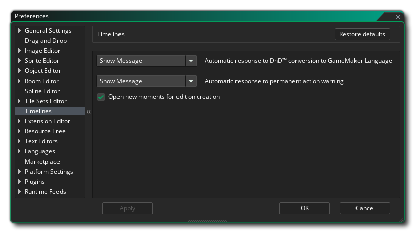

时间轴偏好

时间线首选项用于定义你在使用时间线编辑器时的某些属性。可用的选项有
- 自动响应GML Visual转换为GameMaker语言。当你在一个timeline 瞬间使用鼠标右键
 菜单选项，将GML 视觉动作转换成script （代码）时，你会得到一个提示，问你是否要继续，因为这是一个单向的转换。把这个选项改为 "好 "将抑制该信息，并继续进行转换，就像你在对话框中点击了 "好 "一样。默认设置是 "显示消息"。
菜单选项，将GML 视觉动作转换成script （代码）时，你会得到一个提示，问你是否要继续，因为这是一个单向的转换。把这个选项改为 "好 "将抑制该信息，并继续进行转换，就像你在对话框中点击了 "好 "一样。默认设置是 "显示消息"。
- 对永久行动警告的自动反应。timeline 中的某些操作是不能撤销的，当这种情况发生时，你会收到一条警告信息，询问你是否要继续。把这个选项改为 "好"，就会抑制这条信息，并继续进行操作，就像你在对话框中点击了 "好 "一样。默认设置是 "显示信息"。
- 在创建时打开新的时刻进行编辑。通常，当你添加一个新的时刻到timeline ，GameMaker会自动打开编辑器，让你添加你的代码或GML Visual到它。然而，如果你不勾选这个选项，那么这个时刻将被添加，而不需要打开编辑器（你可以通过双击
 来打开它）。默认情况下，这个选项是打开的。
来打开它）。默认情况下，这个选项是打开的。